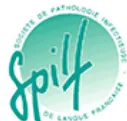

Logo des partenaires à solliciter, accord en attente

Renaloo, Le Lien
Comité des Pratiques Professionnelles de l'AFU (CPP-AFU)
Comité d'Infectiologie de l'AFU (CIAFU)
Place de l'ECBU avant une prise en charge urologique chirurgicale ou interventionnelle chez l'adulte et modalités de traitement en cas de colonisation
Note de cadrage – Octobre 2024
A l'attention du groupe de pilotage
| AFU | Association Française d'Urologie |
| EAU | « European Association of Urology » |
| ECBU | Examen Cytobactériologique des Urines |
| HAS | Haute Autorité de Santé |
| IUAS | Infections Urinaires Associées aux Soins |
| SFM | Société Française de Microbiologie |
| SFHH | Société Française d'Hygiène Hospitalière |
| SPILF | Société de Pathologie Infectieuse de Langue Française |
| 1 | Synthèse des objectifs de cette expertise | .....Erreur ! Signet non défini. |
| 2 | Les acteurs de cette expertise | .....Erreur ! Signet non défini. |
| 2.1 | Promoteur | .....Erreur ! Signet non défini. |
| 2.2 | Autres sociétés savantes ou agences impliquées dans le groupe de travail (GT) ou le groupe de lecture | .....Erreur ! Signet non défini. |
| 2.3 | Associations de patients | .....Erreur ! Signet non défini. |
| 3 | Présentation du thème | .....Erreur ! Signet non défini. |
| 3.1 | Saisine | .....Erreur ! Signet non défini. |
| 3.2 | Contexte du thème | .....Erreur ! Signet non défini. |
| ▶ | Epidémiologie | .....Erreur ! Signet non défini. |
| ▶ | Définitions | .....Erreur ! Signet non défini. |
| ▶ | Etat des lieux sur les pratiques et l'organisation de la prise en charge | .....Erreur ! Signet non défini. |
| 3.3 | Enjeux / justification du projet | .....Erreur ! Signet non défini. |
| 3.4 | Objectifs des recommandations | .....Erreur ! Signet non défini. |
| 3.5 | Questions cliniques retenues | .....Erreur ! Signet non défini. |
| 3.6 | Professionnels cibles | .....Erreur ! Signet non défini. |
| 3.7 | Patients concernés par le thème | .....Erreur ! Signet non défini. |
| 4 | Méthode de mise en œuvre | .....Erreur ! Signet non défini. |
| 4.1 | Etapes et calendrier prévisionnel | .....Erreur ! Signet non défini. |
| 4.2 | Recherche bibliographique | .....Erreur ! Signet non défini. |
| 4.3 | Sélection bibliographique | .....Erreur ! Signet non défini. |
| 4.4 | Construction de l'argumentaire | .....Erreur ! Signet non défini. |
| 4.5 | Relecture nationale | .....Erreur ! Signet non défini. |
| 4.6 | Données disponibles (états des lieux documentaire) | .....Erreur ! Signet non défini. |
| ▶ | Recommandations internationales existantes | .....Erreur ! Signet non défini. |
| ▶ | Méta-analyses, revues systématiques ou autres publications internationales | .....Erreur ! Signet non défini. |
| 4.7 | Synthèse de l'avis des professionnels et des patients et usagers | .....Erreur ! Signet non défini. |
| ▶ | Parties prenantes consultées | .....Erreur ! Signet non défini. |
| ▶ | Préoccupations des professionnels et des patients et usagers | .....Erreur ! Signet non défini. |
| 4.8 | Productions, outils d'implémentation et mesure d'impact | .....Erreur ! Signet non défini. |
| ▶ | Productions prévues et plan de diffusion/communication envisagés | .....Erreur ! Signet non défini. |
| ▶ | Outils d'implémentation | .....Erreur ! Signet non défini. |
| ▶ | Communication et diffusion | .....Erreur ! Signet non défini. |
| ▶ | Indicateurs et critères de suivi de l'adhésion à la RBP – Étude d'impact | .....Erreur ! Signet non défini. |
| 4.9 | Actualisation des recommandations | .....Erreur ! Signet non défini. |
| 5 | Annexes | .....5 |
| Annexe 1 : Groupe de travail et groupe de lecture | .....Erreur ! Signet non défini. | |
| ▶ | Groupe de pilotage | .....Erreur ! Signet non défini. |
| ▶ | Groupe de travail | .....Erreur ! Signet non défini. |
| ▶ | Groupe de lecture (3 à 5 personnes / SS ou association) | .....Erreur ! Signet non défini. |
Annexe 2 : Recherche bibliographique (cf. Excel « sélection bibliographique -> 6 onglets : 1 onglet / type d'étude) ..... Erreur ! Signet non défini.
Références bibliographiques .....22
Cette expertise doit permettre :
Ce travail doit permettre :
Ce travail s'intègre dans les travaux du comité d'infectiologie de l'Association Française d'Urologie (CIAFU).
Le comité est en charge des travaux de l'AFU sur l'infectiologie urologique. Le groupe est constitué d'urologues, de microbiologistes, d'infectiologues et de médecins généralistes/urgentistes. Le comité se réunit 4 fois par an et participe à des conférences téléphoniques régulières en fonction de l'actualité.
Il s'agit d'une auto-saisine du CIAFU pour l'élaboration de ses recommandations de bonne pratique, en partenariat avec la Société de Pathologie Infectieuse de Langue Française (SPILF). Cette recommandation porte sur la place de l'examen cytobactériologique des urines (ECBU) avant une prise en charge urologique chirurgicale ou interventionnelle chez l'adulte (indications, techniques) et sur la prise en charge du patient en cas de positivité de l'ECBU. Plusieurs constats justifient ce projet :
L'infection urinaire est la deuxième infection communautaire la plus fréquente après les infections des voies respiratoires. C'est la première cause d'infection liée aux soins en milieu hospitalier (notamment en post-opératoire [SFM-SPILF-HAS 2023]). Son incidence est parfois augmentée en cas de portage de bactéries dans l'urine. D'après les études PEP (Pan European Prevalence) de 2003 et PEAP (Pan EuroAsian Prev) de 2004, la prévalence des colonisations ou infections urinaires aiguës était de 11% [Bjerklund Johansen et al. 2007]. Une colonisation urinaire était présente dans 29% des cas, une cystite dans 26% des cas, une pyélonéphrite dans 21% des cas et un urosepsis dans 12% des cas [Bjerklund Johansen et al. 2007]. Dans la population des patients urologiques, les infections urinaires associées aux soins se transforment en urosepsis dans près de 25% des cas (âge moyen : ans ; ratio femme/homme : 3:7) [Tandoğdu et al. 2016].
Une colonisation urinaire ou bactériurie asymptomatique (femme enceinte) est définie par la présence d'une bactériurie sans manifestation clinique associée qui pourrait faire évoquer une infection urinaire telle que la fièvre ou des brûlures en urinant. A ce jour, il n'existe pas de seuil validé de bactériurie sauf en cas de grossesse ( cfu/mL) [Caron et al. 2018]. En l'absence de signes d'infection urinaire, une colonisation urinaire est fréquente ; elle correspond à une
colonisation communautaire [Hermanides et al. 2008]. On estime qu'une colonisation urinaire survient chez 1 à 5% des femmes pré-ménopausées en bonne santé et chez 2-10% des femmes enceintes. Chez les patients âgés de plus de 70 ans par ailleurs en bonne santé, cette proportion passe à 11 à 16% chez les femmes et à 4 à 19% chez les hommes. Chez les patients diabétiques, la colonisation urinaire survient chez 9 à 27% des femmes et chez 0,7 à 11% des hommes ; elle est relativement élevée chez les blessés médullaires (23-89%) [Nicolle et al. 2005]. La prévalence de la colonisation urinaire chez les personnes portant une sonde urinaire à demeure depuis plus de 3 mois est proche de 100% [Kouri et al. 2024].
Les infections urinaires (cystite, pyélonéphrite, prostatite, épididymite)1 se définissent par l'association de symptômes/signes cliniques, voire morphologiques, associés à un critère bactériologique. Les signes cliniques varient avec l'âge, le sexe des patients, la présence d'un sondage urinaire et sa durée, la localisation anatomique et la sévérité de l'infection [Caron et al. 2018]. L'infection urinaire est une complication potentiellement grave. D'après l'étude GPIU2, sur un total de 702 hommes inclus dans 84 centres participant dans le monde entier, l'incidence d'une infection urinaire symptomatique était de 5%, celle d'une infection urinaire fébrile était de 3,5%, et 3% ont dû être hospitalisés [Wagenlehner et al. 2016]. De plus, en Europe, on observe une augmentation de l'incidence des infections urinaires secondaires à des bactéries multi ou hautement résistantes [Cassini et al. 2019]. Les entérobactériales sont les principales pourvoyeuses d'infections urinaires. Escherichia coli est de loin la première bactérie responsable d'infection urinaire ; elle est retrouvée dans 70-95% des cas d'infections communautaires et 30-50% des cas d'infections acquises en milieu de soins [SFM-SPILF-HAS 2023]. En France3, le taux d'Escherichia coli résistants aux céphalosporines de 3ème génération était de l'ordre de 8,4% en 2022. Or l'émergence de souches résistantes est en grande partie liée à l'utilisation non justifiée ou inappropriée des antibiotiques [SFM-SPILF-HAS 2023].
Le nombre d'ECBU réalisés chaque année en France est en constante augmentation puisque, même chez un patient asymptomatique, un ECBU est souvent prescrit sans justification argumentée. En France, près de 7 à 9 millions4 d'ECBU sont réalisés chaque année, ce qui en fait l'examen le plus prescrit et représente un coût de 180 millions d'euros par an pour la sécurité sociale. En 2021, 601 472 interventions urologiques ont été recensées en France5.
2 GPIU est une étude de prévalence annuelle menée dans le monde entier pour recenser les infections chez les patients urologiques sur une base annuelle depuis 2003 : https://uroweb.org/news/new-gpiu-study-dates-for-2022
3 Surveillance Atlas of Infectious Diseases. Accessed August 5, 2023. https://atlas.ecdc.europa.eu/public/index.aspx
4 https://www.laviedulabo.fr/savez-vous-tout-a-propos-de-lecbu/
5 https://www.scansante.fr/applications/action-gdr-chirurgie-ambulatoire-spec
D'après une étude de cohorte rétrospective multicentrique française, il n'y avait pas de relation entre l'ECBU préopératoire et le risque d'infection urinaire fébrile post-opératoire ou d'infection du site chirurgical en cas de néphrectomie partielle ou totale [Ayoub et al. 2024]. Ces données suggèrent que le dépistage et le traitement antibiotique probabiliste d'une colonisation urinaire ne semblent pas nécessaires pour prévenir les infections urinaires post-opératoires et/ou du site opératoire dans cette indication [Ayoub et al. 2024].
D'après une revue systématique conduite par le comité d'infectiologie de l'AFU (CIAFU), le risque infectieux chez un patient non porteur de matériel avec un ECBU préopératoire polymicrobien semble faible [Vallée et al. 2019]. En revanche, en chirurgie endo-urologique chez un patient porteur de matériel, le risque d'infection post-opératoire est évalué entre 8 à 11% selon le type d'intervention. Considérer un ECBU comme stérile dans cette situation d'ECBU polymicrobien conduirait à négliger un risque majeur d'infection post-opératoire et ce même en cas de prescription d'une antibioprophylaxie peropératoire [Vallée et al. 2019].
D'après une analyse des données de l'étude mondiale de prévalence des infections en urologie pour la période 2005-2010 qui vise à décrire l'utilisation de l'antibioprophylaxie pour les procédures urologiques, lorsqu'un ECBU est réalisé en période préopératoire, une prescription d'antibiotique est le plus souvent réalisée [Ček et al. 2013]. En effet, le traitement de la colonisation urinaire, définie comme une ECBU positive chez un patient ne présentant aucun symptôme, est controversé ; l'antibioprophylaxie ne semble pas toujours conforme aux recommandations européennes. Il existe des différences significatives entre les pays/régions et les types d'hôpitaux, à la fois dans l'utilisation de l'antibioprophylaxie pour les procédures dites « propres » et dans les types d'antibiotiques utilisés [Ček et al. 2013]. Il semble que le respect des recommandations puissent réduire la consommation antibiotique, néanmoins cette étude n'avait pas confirmé de réduction du risque infectieux.
D'après une analyse des données issues d'un registre (TOCUS6) incluant tous les patients ayant eu une chirurgie urologique dans 10 hôpitaux français entre le 1er janvier 2016 et le 1er avril 2023, l'efficacité d'un traitement antibiotique probabiliste systématique en cas d'ECBU préopératoire positif n'a pas été établie de manière formelle. Cela tend à confirmer que le dépistage et le traitement de la colonisation urinaire avant chirurgie urologique n'est probablement pas pertinent pour toutes les interventions d'urologie [Kutchukian et al. 2024]. Le recours à une antibiothérapie probabiliste, parfois des antibiotiques à large spectre, concourt à l'augmentation de l'antibiorésistance [Cek et al. 2014]. Les études GPIU 2003-2010 ont révélé des taux élevés de résistance à la ciprofloxacine (>50%), aux céphalosporines (35-50%) et aux pénicillines (50%) [Cek et al. 2014]. De plus, l'utilisation excessive d'antibiotiques serait associée à une augmentation du taux de complications infectieuses post-opératoires voire à des modifications histologiques (état pré-cancéreux) [Cai et al. 2012] [Wullt et al. 2019] [Herr and Donat 2019] [Bourgi et al. 2025a].
Au niveau mondial, l'antibioprophylaxie systématique pour toutes les interventions urologiques était la plus élevée en Asie, en Afrique et en Amérique latine (86%, 85% et 84%, respectivement), suivie de l'Europe (67%) [Wagenlehner et al. 2016].
6 "To treat Or not to treat a Colonization prior to Urologic Surgery."
Ces recommandations s'adressent à tout professionnel de santé amené à réaliser ou à poser l'indication d'un ECBU avant une prise en charge interventionnelle ou chirurgicale urologique chez l'adulte : les urologues, les microbiologistes, les infectiologues, les anesthésistes-réanimateurs, les hygiénistes, les médecins spécialistes en médecine générale, les radiologues, les biologistes... ainsi qu'aux soignants, aidants et paramédicaux (infirmières, ...).
Ces recommandations concernent l'ensemble des personnes adultes (hommes ou femmes) susceptibles de bénéficier d'une prise en charge urologique, interventionnelle ou chirurgicale.
Q1. Quelle est la place de l'ECBU (indication, délai de réalisation, ...) dans le diagnostic d'une colonisation urinaire avant une prise en charge urologique interventionnelle (ex : cystoscopie) ou chirurgicale (ex : cystectomie) chez l'adulte en fonction du type d'intervention et des facteurs de risque (homme/femme, âge, obésité, diabète, durée de pose de stent, prothèse valvulaire cardiaque y compris TAVI, immunosuppression, type de calculs, type de procédure ... ) ?
Q2. Quelles sont les méthodes de dépistage d'une colonisation urinaire en préopératoire (ECBU, ...) ? Comparaison ECU à d'autres techniques ; Recueil des urines, conditions de conservation et de transport des urines, interprétation en fonction de la présence ou non d'une sonde, de symptômes (lesquels ?), de la leucocyturie (seuil ?) et de la bactériurie (seuil ?) ; Seuil selon les bactéries, leur interprétation ; ECU mono, bi ou polymicrobien ; Gestion ciblée / bactérie ; Patient porteur de matériel ou non.
Q3. Quelle prise en charge du patient, en cas de positivité de l'ECBU en péri-opératoire ?
TABLEAU 1 : LES QUESTIONS « PICO »
| Population | Intervention | intervention Comparée | Outcomes (critère de jugement) |
|---|---|---|---|
| Q1. Quelle est la place de l'ECBU (indication, délai de réalisation, ...) dans le diagnostic d'une colonisation urinaire avant une prise en charge interventionnelle (ex : cystoscopie) ou chirurgicale (ex : cystectomie) chez l'adulte en fonction du type d'intervention et des facteurs de risque | |||
| Patients candidats à toute procédure interventionnelle ou chirurgicale urologique Facteurs de risque (homme/femme, âge, obésité, diabète, durée de pose de stent, prothèse valvulaire cardiaque y compris TAVI, immunosuppression, type de calculs, type de procédure ... ?) |
ECBU | Symptômes cliniques / Bandelettes urinaires / Marqueurs biologiques de l'inflammation (CRP, VS) / autres (-1-microglobuline urinaire, PSA, fraction 5 des LDH urinaires, procalcitonine) / Imagerie : écho, scanner / Cytométrie de flux, ... |
Performances diagnostiques |
| Q2. Quelles sont les méthodes de dépistage d'une colonisation urinaire en préopératoire (ECBU, ...) ? | |||
| idem | idem | NA | idem |
| Q3. Quelle prise en charge du patient, en cas de positivité de l'ECBU en péri-opératoire ? | |||
| Patients avec ECU en préopératoire positif | Antibiotiques | Pas d'antibiotiques | Taux d'infection en post-opératoire |
| Type de bactérie retrouvée, concordance avec l'ECBU en préopératoire... |
Les questions qui ne sont pas à traiter dans le cadre de cette expertise sont les suivantes :
La méthode d'élaboration des recommandations « Recommandations par consensus formalisé » (RCF) proposée par la HAS7 a été retenue en raison :
La méthode RCF est à la fois une méthode de recommandations et une méthode de choix dans ces circonstances.
En tant que méthode de consensus, son objectif est de « formaliser le degré d'accord entre experts en identifiant et en sélectionnant, par une cotation itérative avec retour d'information, les points de convergence, sur lesquels sont fondées secondairement les recommandations, et les points de divergence ou d'indécision entre experts, en vue d'apporter aux professionnels et aux patients une aide pour décider des soins les plus appropriés dans des circonstances cliniques données ».
En tant que méthode de recommandations de bonne pratique, son objectif est de rédiger des recommandations concises, non ambiguës, répondant aux questions posées.
Le calendrier (cf. Tableau 2) est indiqué à titre prévisionnel lors du cadrage du projet. Il sera ajusté en tenant compte, en particulier des disponibilités effectives des membres du groupe de travail et du nombre d'articles à analyser qui seront retenus à l'issue de la stratégie bibliographique.
7
L'objectif est de finaliser ce travail pour la fin d'année 2025 avec à la clé, une publication dans la revue « the French Journal of Urology » ou dans une revue internationale.
La réunion du groupe de pilotage du 05/05/2025 a permis la discussion de la note de cadrage, la définition des sous-groupes par question clinique et l'affectation des membres ainsi que des responsables (ou coordonnateurs) de chaque sous-groupe, composant le groupe de pilotage.
Le calendrier a été proposé aux membres du groupe de pilotage qui l'ont validé.
TABLEAU 2. ETAPES ET CALENDRIER DU PROJET
| Etapes | Livrables | Dates |
|---|---|---|
| Réunion de cadrage Identification du besoin et initiation du projet |
Note de cadrage validée par le groupe de pilotage Validation de la méthode de travail, de la constitution de l'expertise, des questions cliniques, du plan de l'argumentaire, de la stratégie bibliographique, du calendrier du projet ; communication sur le rôle des participants |
Novembre 2024 |
| Constitution de l'expertise | Sollicitation des sociétés savantes et associations de patients -> Groupe de travail pluridisciplinaire | Mars 2025 |
| Recherche et sélection bibliographiques | Groupe de pilotage -> Corpus documentaire validé : fichier Excel de sélection des données, attribution / évaluateur | Avril 2025 |
| Réunion du groupe de pilotage | Groupe de pilotage -> Validation de la sélection bibliographique ; présence requise de tous les membres du groupe de pilotage | 5 mai 2025 |
| Analyse des études dans tableau Excel | Groupe de pilotage -> | 25 juin 2025 |
| Construction de l'argumentaire | Groupe de pilotage -> V1 de l'argumentaire Tout le long de l'analyse, prévoir des visioconférences de 2h / question |
Fin juillet 2025 |
| Visio pilotage | redaction des conclusions + recommandations | 18/07 (10h- 12h) 01/08 (16h – 18h) 03/09 (16h-18h) 04/09 (15h-17h) 08/09 (16h30-17h30) 15/09 (20h-22h) |
| 1er tour de cotation | Groupe de cotation | 16 au 25 septembre 2025 |
| Visio pilotage | Discussion des retours de la cotation 1 | 29 septembre ? |
| Réunion 1 plénière (groupe de pilotage + groupe de cotation) | Finalisation des recommandations | 1/10/2025 (10h – 17h) |
| 2nd tour de cotation | Groupe de cotation | -> 13/10/2025 |
| Synthèse des retours du 2nd tour de cotation et finalisation avec le pilotage | Retours colligés | -> 16/10/2025 |
| Relecture nationale | Envoi et commentaires colligés | Du 17/10/2025 au 03/11/2025 |
| Réunion 2 plénière (groupe de pilotage + groupe de cotation) | Intégration des retours de la relecture nationale, finalisation | 17/11/2025 (10h – 17h) |
| Publication – Diffusion | Communications orales | 4ème trimestre 2025 |
| Articles |
La recherche documentaire repose sur une revue systématique des données disponibles pour chacune des questions sélectionnées.
Une attention particulière est accordée au recensement des recommandations ou textes réglementaires dans le domaine au niveau national et international.
Dans un premier temps seront recherchées sur les sites internet des organismes internationaux (EAU, AUA, ...) et sur PubMed®
Les équations de recherche explicitent (cf. Annexe 2 : Recherche bibliographique (cf. Excel « sélection bibliographique -> 6 onglets : 1 onglet / type d'étude) :
Croisement des 3 modules (“surgery” OR “urologic surgical procedures”) AND préopératoire AND (“diagnosis” OR Prophylaxis / “urinary tract infection” OR “UTI” OR “Bacteriuria” OR “Urine culture” OR “Surgical-site infection” OR “Bacterial Infections” OR “Cytobacteriological examination of urine” OR CBEU OR healthcare-associated urogenital infections (HAUTI)
Cette recherche est complétée par des recherches ciblées par type de procédure urologique (cystoscopie ; cystectomie ; ...).
Les membres du groupe de travail complètent le corpus documentaire par les études qui seraient notamment non indexées sur Medline® à la date de la conduite de la recherche bibliographique.
Les critères d'inclusion et d'exclusion des études seront définis a priori puis affinés avec le groupe de travail lors de la première réunion.
Dans un premier temps, seules les études de haut niveau de preuve sont retenues (synthèses méthodiques ou méta-analyses et essais randomisés). Cette évaluation s'effectue :
En cas d'identification d'une synthèse méthodique de qualité, les études qui y sont identifiées ne seront pas à nouveau retenues dans le cadre de cette expertise, afin d'éviter la duplication des efforts et de permettre une analyse critique détaillée de l'ensemble des études retenues.
Dans un second temps, les études originales sont retenues sur la base des critères de sélection après lecture des abstracts.
Sont retenues les études évaluant : Les patients adultes recevant des soins interventionnels ou chirurgicaux urologiques, sans limite d'âge.
Sont exclues les études sur la base des critères suivants :
La qualité méthodologique des études est analysée selon des grilles. Cette analyse méthodologique des études complétée par l'analyse de la pertinence clinique permet d'aboutir à l'attribution de niveaux de preuve aux conclusions des données factuelles de la littérature.
Le niveau de preuve correspond à la cotation des données de la littérature sur lesquelles reposent les recommandations qui seront formulées. Il est fonction du type et de la qualité des études disponibles (niveau de preuve des études individuelles), ainsi que de la cohérence ou non de leurs résultats. Il est spécifié pour chacune des méthodes/interventions considérées (cf. Erreur ! Source du renvoi introuvable.).
Les recommandations sont élaborées sur la base de ces conclusions accompagnées du jugement argumenté des membres du groupe de travail; 3 formulations sont proposées :
La force de la recommandation (Grade A, B, C ou accord d'experts) est déterminée en fonction de quatre facteurs clés et validée par les experts après un vote, sur la base de :
Si les experts ne disposent pas d'études traitant précisément du sujet, ou si aucune donnée sur les critères principaux n'existe, le grade de la recommandation s'appuyant sur l'avis d'experts est indiqué selon le nouveau guide de la HAS : « En l'absence de preuve scientifique, une proposition de recommandation figurera dans le texte des recommandations soumis à l'avis du groupe de lecture si elle obtient l'approbation d'au moins 80% des membres du groupe de travail. Cette approbation sera idéalement obtenue à l'aide d'un système de vote électronique (à défaut, par vote à main levée) et constituera un « accord d'experts ». Si la totalité des membres du groupe de travail approuve une proposition de recommandation sans nécessité de conduire un vote, cela sera explicité dans l'argumentaire scientifique. »
Le groupe de travail8 est composé d'experts professionnels multidisciplinaires. Il intègre des représentants de l'Association Française d'Urologie (AFU) et des sociétés savantes impliquées
8 Les réunions du groupe de travail sont prévues à la Maison de l'Urologie (MUR) – 11 rue Viète – Paris XVIIe. L'AFU met aussi à disposition des experts une plateforme de visio conférence.
dans le thème des travaux ainsi que des représentants d'associations de patients ou d'usagers. L'équilibre des modes d'exercice et la répartition géographique doit être respecté. Le groupe de travail est constitué de :
et de 5 chargés de projets pour l'analyse de la littérature :
La composition du groupe de lecture est similaire à celle du groupe de travail mais avec un plus grand nombre de relecteurs sollicités.
L'étape de la relecture nationale vise à :
L'ensemble des partenaires est informé en amont de la démarche ainsi initiée. Ils seront à nouveau consultés lors de la relecture nationale.
Le document présentant les recommandations est soumis pour avis auprès d'un groupe de professionnels représentatif des spécialités médicales impliquées dans la prise en charge des soins urologiques, du mode d'exercice et des répartitions géographiques. Ces professionnels sont identifiés, après sollicitations des sociétés savantes, avec l'appui de l'AFU et du CIAFU impliqués dans le projet.
Le groupe de lecture donne un avis formalisé sur le fond et la forme de la version initiale des recommandations, en particulier sur son applicabilité, son acceptabilité et sa lisibilité. Les membres rendent un avis consultatif, à titre individuel et ne sont pas réunis.
Ce groupe comprend 30 à 50 personnes concernées par le thème, expertes ou non du sujet. Il permet d'élargir l'éventail des participants au travail en y associant des représentants des spécialités médicales, des professions non médicales ou de la société civile non présents dans les groupes de pilotage et de travail.
Aucune des personnes consultées par le groupe de pilotage, ni celles participant au groupe de pilotage et au groupe de travail, ne fait partie du groupe de lecture.
Dans le cadre de la relecture nationale, les grilles de cotation seront adressées sous format électronique via le logiciel Survey Monkey®.
L'ensemble des commentaires colligés est revu avec les membres du groupe de travail ; ces commentaires permettent la finalisation du document avant sa validation finale puis diffusion.
La conduite d'enquêtes de pratiques via le logiciel Survey Monkey® auprès des urologues, avant et après édition de ces recommandations.
Ces recommandations seront :
Ce référentiel sera actualisé tous les 5 ans ou dès que de nouvelles données pouvant entraîner un changement dans les pratiques seront identifiées. Pour ce faire, une veille bibliographique et des enquêtes de pratiques seront conduites ; les questions pour lesquelles de nouvelles données qui pourraient sembler entraîner une modification des conclusions ou une augmentation du niveau de preuve seront identifiées pour mise à jour.
La veille bibliographique mensuelle est assurée par les experts du groupe de travail permettant ainsi d'identifier les éléments de justification d'une mise à jour de ces recommandations. À l'issue du processus de veille, les questions seront retenues pour une éventuelle actualisation si la confrontation des nouvelles et des anciennes données a permis d'identifier les études susceptibles de modifier les recommandations existantes. Elles correspondent aux :
Ces études seront analysées.
À noter que les études, non susceptibles de modifier les recommandations existantes, correspondent aux :
Les sociétés savantes / associations qui ont participé à ce projet sont les suivantes : AFU, AFUF, SPILF, SFAR, SFM, SF2H, AFIIU, Renaloo, Le Lien SFMU, SFR, SFNDT, SSU, AAU, AMU, ATU, SLU
La conduite méthodologique du projet est assurée par Mme Diana Kassab, méthodologiste – cheffe de projet à l'AFU.
A compléter
Medline®_13/11/2024
► Recommandations -> 14 articles retrouvés
((("urolog*"[Title] AND ("procedure*"[Title] OR "surger*"[Title])) OR "urologic surgical procedures"[MeSH Terms]) AND ("preoperative"[Title] OR "perioperative"[Title] OR "prior"[Title] OR "perioperative care"[MeSH Terms] OR "preoperative care"[MeSH Terms] OR "postoperative complications/prevention and control"[MeSH Terms]) AND ("urinary tract infections/diagnosis"[MeSH Terms] OR "surgical wound infection/diagnosis"[MeSH Terms] OR "urine culture"[Title] OR "urinalysis"[MeSH Terms] OR "cytobacteriological"[Title] OR "cytobacteriological examination"[All Fields] OR "cbeu"[All Fields] OR "bacterial colonisation"[Title] OR "bacteriuria/diagnosis"[MeSH Terms] OR "urinary tract infections"[MeSH Terms] OR "surgical site infection"[Title] OR "bacterial infections"[MeSH Terms] OR "uti"[Title] OR "bacteriuria"[MeSH Terms] OR "bacteriuria"[Title] OR "asymptomatic infections"[MeSH Terms] OR "hauti"[Title] OR "hospital acquired urinary tract infections"[Title/Abstract] OR "urinary tract infections/prevention and control"[MeSH Terms] OR "surgical wound infection/prevention and control"[MeSH Terms] OR "Anti-Bacterial Agents/therapeutic use"[MAJR] OR "antibiotic prophylaxis"[MeSH Terms] OR "antibiotic treatment"[Title] OR "bacteriuria/therapy"[MeSH Terms]) NOT ("animals"[MeSH Major Topic] OR "invertebrate"[Title/Abstract] OR "animal experimentation"[MeSH Major Topic] OR "animal experiment"[Title/Abstract] OR "animal model"[Title/Abstract] OR "animal tissue"[Title/Abstract] OR "animal cell"[Title/Abstract] OR "nonhuman"[Title/Abstract]) AND ("2000/01/01"[Date - Publication] : "2024/11/13"[Date - Publication]) AND (french[Language] OR english[Language]) AND (recommendation*[TI] OR guideline*[TI] OR statement*[TI] OR consensus[TI] OR position paper[TI] OR health planning guidelines[MH] OR practice guideline[PT] OR guideline[PT] OR Consensus Development Conference[PT] OR Consensus Development Conference, NIH[PT])► SM/MA après exclusion des doublons dans guidelines -> 26 articles retrouvés
(("urolog*"[Title] AND ("procedure*"[Title] OR "surger*"[Title])) OR "urologic surgical procedures"[MeSH Terms]) AND ("preoperative"[Title] OR "perioperative"[Title] OR "prior"[Title] OR "perioperative care"[MeSH Terms] OR "preoperative care"[MeSH Terms] OR "postoperative complications/prevention and control"[MeSH Terms]) AND ("urinary tract infections/diagnosis"[MeSH Terms] OR "surgical wound infection/diagnosis"[MeSH Terms] OR "urine culture"[Title] OR "urinalysis"[MeSH Terms] OR "cytobacteriological"[Title] OR "cytobacteriological examination"[All Fields] OR "cbeu"[All Fields] OR "bacterial colonisation"[Title] OR "bacteriuria/diagnosis"[MeSH Terms] OR "urinary tract infections"[MeSH Terms] OR "surgical site infection"[Title] OR "bacterial infections"[MeSH Terms] OR "uti"[Title] OR "bacteriuria"[MeSH Terms] OR "bacteriuria"[Title] OR "asymptomatic infections"[MeSH Terms] OR "hauti"[Title] OR "hospital acquired urinary tract infections"[Title/Abstract] OR "urinary tract infections/prevention and control"[MeSH Terms] OR "surgical wound infection/prevention and control"[MeSH Terms] OR "Anti-Bacterial Agents/therapeutic use"[MAJR] OR "antibiotic prophylaxis"[MeSH Terms] OR "antibiotic treatment"[Title] OR "bacteriuria/therapy"[MeSH Terms]) NOT ("animals"[MeSH Major Topic] OR "invertebrate"[Title/Abstract] OR "animal experimentation"[MeSH Major Topic] OR "animal experiment"[Title/Abstract] OR "animal model"[Title/Abstract] OR "animal tissue"[Title/Abstract] OR "animal cell"[Title/Abstract] OR "nonhuman"[Title/Abstract]) AND ("2000/01/01"[Date - Publication] : "2024/11/13"[Date - Publication]) AND (french[Language] OR english[Language]) AND (metaanalys*[TI] OR meta-analys*[TI] OR meta analysis[TI] OR systematic review*[TI] OR systematic overview*[TI] OR systematic literature review*[TI] OR systematical review*[TI] OR systematical overview*[TI] OR systematical literature review*[TI] OR systematic literature search[TI] OR pooled analysis[TI] OR meta-analysis[PT] OR "Systematic Review" [PT] OR cochrane database syst rev[TA]) NOT (recommendation*[TI] OR guideline*[TI] OR statement*[TI] OR consensus[TI] OR position paper[TI] OR health planning guidelines[MH] OR practice guideline[PT] OR guideline[PT] OR Consensus Development Conference[PT] OR Consensus Development Conference, NIH[PT])► Etudes prospectives randomisées ou non après exclusion des doublons dans guidelines et SM/MA -> 89 articles retrouvés
(("urolog*"[Title] AND ("procedure*"[Title] OR "surger*"[Title])) OR "urologic surgical procedures"[MeSH Terms]) AND ("preoperative"[Title] OR "perioperative"[Title] OR "prior"[Title] OR "perioperative care"[MeSH Terms] OR "preoperative care"[MeSH Terms] OR "postoperative complications/prevention and control"[MeSH Terms]) AND ("urinary tract infections/diagnosis"[MeSH Terms] OR "surgical wound infection/diagnosis"[MeSH Terms] OR "urine culture"[Title] OR "urinalysis"[MeSH Terms] OR "cytobacteriological"[Title] OR "cytobacteriological examination"[All Fields] OR "cbeu"[All Fields] OR "bacterial colonisation"[Title] OR "bacteriuria/diagnosis"[MeSH Terms] OR "urinary tract infections"[MeSH Terms] OR "surgical site infection"[Title] OR "bacterial infections"[MeSH Terms] OR "uti"[Title] OR "bacteriuria"[MeSH Terms] OR "bacteriuria"[Title] OR "asymptomatic infections"[MeSH Terms] OR "hauti"[Title] OR "hospital acquired urinary tract infections"[Title/Abstract] OR "urinary tract infections/prevention and control"[MeSH Terms] OR "surgical wound infection/prevention and control"[MeSH Terms] OR "Anti-Bacterial Agents/therapeutic use"[MAJR] OR "antibiotic prophylaxis"[MeSH Terms] OR "antibiotic treatment"[Title] OR "bacteriuria/therapy"[MeSH Terms]) NOT ("animals"[MeSH Major Topic] OR "invertebrate"[Title/Abstract] OR "animal experimentation"[MeSH Major Topic] OR "animal experiment"[Title/Abstract] OR "animal model"[Title/Abstract] OR "animal tissue"[Title/Abstract] OR "animal cell"[Title/Abstract] OR "nonhuman"[Title/Abstract]) AND ("2000/01/01"[Date - Publication] : "2024/11/13"[Date - Publication]) AND (french[Language] OR english[Language]) AND (random*[TIAB] OR random allocation[MH] OR double-blind method[MH] OR single-blind method[MH] OR cross-over studies[MH] OR randomized controlled trial[PT] OR "Controlled Clinical Trial"[PT] OR multicenter study[PT]) NOT ((metaanalys*[TI] OR meta-analys*[TI] OR meta analysis[TI] OR systematic review*[TI] OR systematic overview*[TI] OR systematic literature review*[TI] OR systematical review*[TI] OR systematical overview*[TI] OR systematical literature review*[TI] OR systematic literature search[TI] OR pooled analysis[TI] OR meta-analysis[PT] OR "Systematic Review" [PT] OR cochrane database syst rev[TA]) OR (recommendation*[TI] OR guideline*[TI] OR statement*[TI] OR consensus[TI] OR position paper[TI] OR health planning guidelines[MH] OR practice guideline[PT] OR guideline[PT] OR Consensus Development Conference[PT] OR Consensus Development Conference, NIH[PT]))► Etudes comparatives, essais cliniques non contrôlés après exclusion des doublons dans études prospectives randomisées ou non, guidelines et SM/MA -> 49 articles retrouvés
((("urolog*"[Title] AND ("procedure*"[Title] OR "surger*"[Title])) OR "urologic surgical procedures"[MeSH Terms]) AND ("preoperative"[Title] OR "perioperative"[Title] OR "prior"[Title] OR "perioperative care"[MeSH Terms] OR "preoperative care"[MeSH Terms] OR "postoperative complications/prevention and control"[MeSH Terms]) AND ("urinary tract infections/diagnosis"[MeSH Terms] OR "surgical wound infection/diagnosis"[MeSH Terms] OR "urine culture"[Title] OR "urinalysis"[MeSH Terms] OR "cytobacteriological"[Title] OR "cytobacteriological examination"[All Fields] OR "cbeu"[All Fields] OR "bacterial colonisation"[Title] OR "bacteriuria/diagnosis"[MeSH Terms] OR "urinary tract infections"[MeSH Terms] OR "surgical site infection"[Title] OR "bacterial infections"[MeSH Terms] OR "uti"[Title] OR "bacteriuria"[MeSH Terms] OR "bacteriuria"[Title] OR "asymptomatic infections"[MeSH Terms] OR "hauti"[Title] OR "hospital acquired urinary tract infections"[Title/Abstract] OR "urinary tract infections/prevention and control"[MeSH Terms] OR "surgical wound infection/prevention and control"[MeSH Terms] OR "Anti-Bacterial Agents/therapeutic use"[MAJR] OR "antibiotic prophylaxis"[MeSH Terms] OR "antibiotic treatment"[Title] OR "bacteriuria/therapy"[MeSH Terms]) NOT ("animals"[MeSH Major Topic] OR "invertebrate"[Title/Abstract] OR "animal experimentation"[MeSH Major Topic] OR "animal experiment"[Title/Abstract] OR "animal model"[Title/Abstract] OR "animal tissue"[Title/Abstract] OR "animal cell"[Title/Abstract] OR "nonhuman"[Title/Abstract]) AND ("2000/01/01"[Date - Publication] : "2024/11/13"[Date - Publication]) AND (french[Language] OR english[Language]) AND (clinical trial*[TI] OR comparative stud*[TI] OR versus[TI] OR Clinical Trial[Publication Type:NoExp] OR Comparative Study[PT]) NOT ((random*[TIAB] OR random allocation[MH] OR double-blind method[MH] OR single-blind method[MH] OR cross-over studies[MH] OR randomized controlled trial[PT] OR "Controlled Clinical Trial"[PT] OR multicenter study[PT]) OR (metaanalys*[TI] OR meta-analys*[TI] OR meta analysis[TI] OR systematic review*[TI] OR systematic overview*[TI] OR systematic literature review*[TI] OR systematical review*[TI] OR systematical overview*[TI] OR systematical literature review*[TI] OR systematic literature search[TI] OR pooled analysis[TI] OR meta-analysis[PT] OR "Systematic Review" [PT] OR cochrane database syst rev[TA]) OR (recommendation*[TI] OR guideline*[TI] OR statement*[TI] OR consensus[TI] OR position paper[TI] OR health planning guidelines[MH] OR practice guideline[PT] OR guideline[PT] OR Consensus Development Conference[PT] OR Consensus Development Conference, NIH[PT]))► Etudes observationnelles (Etudes de cohortes) après exclusion des doublons dans études comparatives, essais cliniques non contrôlés ; études prospectives randomisées ou non ; guidelines et SM/MA -> 145 articles retrouvés
(("urolog*"[Title] AND ("procedure*"[Title] OR "surger*"[Title])) OR "urologic surgical procedures"[MeSH Terms]) AND ("preoperative"[Title] OR "perioperative"[Title] OR "prior"[Title] OR "perioperative care"[MeSH Terms] OR "preoperative care"[MeSH Terms] OR "postoperative complications/prevention and control"[MeSH Terms]) AND ("urinary tract infections/diagnosis"[MeSH Terms] OR "surgical wound infection/diagnosis"[MeSH Terms] OR "urine culture"[Title] OR "urinalysis"[MeSH Terms] OR "cytobacteriological"[Title] OR "cytobacteriological examination"[All Fields] OR "cbeu"[All Fields] OR "bacterial colonisation"[Title] OR "bacteriuria/diagnosis"[MeSH Terms] OR "urinary tract infections"[MeSH Terms] OR "surgical site infection"[Title] OR "bacterial infections"[MeSH Terms] OR "uti"[Title] OR "bacteriuria"[MeSH Terms] OR "bacteriuria"[Title] OR "asymptomatic infections"[MeSH Terms] OR "hauti"[Title] OR "hospital acquired urinary tract infections"[Title/Abstract] OR "urinary tract infections/prevention and control"[MeSH Terms] OR "surgical wound infection/prevention and control"[MeSH Terms] OR "Anti-Bacterial Agents/therapeutic use"[MAJR] OR "antibiotic prophylaxis"[MeSH Terms] OR "antibiotic treatment"[Title] OR "bacteriuria/therapy"[MeSH Terms]) NOT ("animals"[MeSH Major Topic] OR "invertebrate"[Title/Abstract] OR "animal experimentation"[MeSH Major Topic] OR "animal experiment"[Title/Abstract] OR "animal model"[Title/Abstract] OR "animal tissue"[Title/Abstract] OR "animal cell"[Title/Abstract] OR "nonhuman"[Title/Abstract]) AND ("2000/01/01"[Date - Publication] : "2024/11/13"[Date - Publication]) AND (french[Language] OR english[Language]) AND (cohort*[TI] OR longitudinal stud*[TI] OR follow-up stud*[TI] OR prospective stud*[TI] OR retrospective stud*[TI] OR cohort studies[MH] OR longitudinal studies[MH] OR follow-up studies[MH] OR prospective studies[MH] OR Retrospective Studies[MH] OR "Observational Study" [Publication Type]) NOT ((clinical trial*[TI] OR comparative stud*[TI] OR versus[TI] OR Clinical Trial[Publication Type:NoExp] OR Comparative Study[PT]) OR (random*[TIAB] OR random allocation[MH] OR double-blind method[MH] OR single-blind method[MH] OR cross-over studies[MH] OR randomized controlled trial[PT] OR "Controlled Clinical Trial"[PT] OR multicenter study[PT]) OR (metaanalys*[TI] OR meta-analys*[TI] OR meta analysis[TI] OR systematic review*[TI] OR systematic overview*[TI] OR systematic literature review*[TI] OR systematical review*[TI] OR systematical overview*[TI] OR systematical literature review*[TI] OR systematic literature search[TI] OR pooled analysis[TI] OR meta-analysis[PT] OR "Systematic Review" [PT] OR cochrane database syst rev[TA]) OR (recommendation*[TI] OR guideline*[TI] OR statement*[TI] OR consensus[TI] OR position paper[TI] OR health planning guidelines[MH] OR practice guideline[PT] OR guideline[PT] OR Consensus Development Conference[PT] OR Consensus Development Conference, NIH[PT]))► Autres après exclusion des doublons dans études observationnelles (Etudes de cohortes) ; études comparatives, essais cliniques non contrôlés ; études prospectives randomisées ou non ; guidelines et SM/MA -> 121 articles retrouvés
((("urolog*"[Title] AND ("procedure*"[Title] OR "surger*"[Title])) OR "urologic surgical procedures"[MeSH Terms]) AND ("preoperative"[Title] OR "perioperative"[Title] OR "prior"[Title] OR "perioperative care"[MeSH Terms] OR "preoperative care"[MeSH Terms] OR "postoperative complications/prevention and control"[MeSH Terms]) AND ("urinary tract infections/diagnosis"[MeSH Terms] OR "surgical wound infection/diagnosis"[MeSH Terms] OR "urine culture"[Title] OR "urinalysis"[MeSH Terms] OR "cytobacteriological"[Title] OR "cytobacteriological examination"[All Fields] OR "cbeu"[All Fields] OR "bacterial colonisation"[Title] OR "bacteriuria/diagnosis"[MeSH Terms] OR "urinary tract infections"[MeSH Terms] OR "surgical site infection"[Title] OR "bacterial infections"[MeSH Terms] OR "uti"[Title] OR "bacteriuria"[MeSH Terms] OR "bacteriuria"[Title] OR "asymptomatic infections"[MeSH Terms] OR "hauti"[Title] OR "hospital acquired urinary tract infections"[Title/Abstract] OR "urinary tract infections/prevention and control"[MeSH Terms] OR "surgical wound infection/prevention and control"[MeSH Terms] OR "Anti-Bacterial Agents/therapeutic use"[MAJR] OR "antibiotic prophylaxis"[MeSH Terms] OR "antibiotic treatment"[Title] OR "bacteriuria/therapy"[MeSH Terms]) NOT ("animals"[MeSH Major Topic] OR "invertebrate"[Title/Abstract] OR "animal experimentation"[MeSH Major Topic] OR "animal experiment"[Title/Abstract] OR "animal model"[Title/Abstract] OR "animal tissue"[Title/Abstract] OR "animal cell"[Title/Abstract] OR "nonhuman"[Title/Abstract]) AND ("2000/01/01"[Date - Publication] : "2024/11/04"[Date - Publication]) AND (french[Language] OR english[Language]) NOT (letter[PT] OR editorial[PT] OR news[PT] OR comment[PT]) NOT ((cohort*[TI] OR longitudinal stud*[TI] OR follow-up stud*[TI] OR prospective stud*[TI] OR retrospective stud*[TI] OR cohort studies[MH] OR longitudinal studies[MH] OR follow-up studies[MH] OR prospective studies[MH] OR Retrospective Studies[MH] OR "Observational Study" [Publication Type] OR (clinical trial*[TI] OR comparative stud*[TI] OR versus[TI] OR Clinical Trial[Publication Type:NoExp] OR Comparative Study[PT]) OR (random*[TIAB] OR random allocation[MH] OR double-blind method[MH] OR single-blind method[MH] OR cross-over studies[MH] OR randomized controlled trial[PT] OR "Controlled Clinical Trial"[PT] OR multicenter study[PT]) OR (metaanalys*[TI] OR meta-analys*[TI] OR meta analysis[TI] OR systematic review*[TI] OR systematic overview*[TI] OR systematic literature review*[TI] OR systematical review*[TI] OR systematical overview*[TI] OR systematical literature review*[TI] OR systematic literature search[TI] OR pooled analysis[TI] OR meta-analysis[PT] OR "Systematic Review" [PT] OR cochrane database syst rev[TA] OR (recommendation*[TI] OR guideline*[TI] OR statement*[TI] OR consensus[TI] OR position paper[TI] OR health planning guidelines[MH] OR practice guideline[PT] OR guideline[PT] OR Consensus Development Conference[PT] OR Consensus Development Conference, NIH[PT]))-a global perspective: results from the GPIU studies 2003-2010. World J Urol 32(6): 1587-1594. doi: 10.1007/s00345-013-1218-9.
Infective complications after prostate biopsy: outcome of the Global Prevalence Study of Infections in Urology (GPIU) 2010 and 2011, a prospective multinational multicentre prostate biopsy study. European urology 63(3): 521-527. doi: 10.1016/j.eururo.2012.06.003.